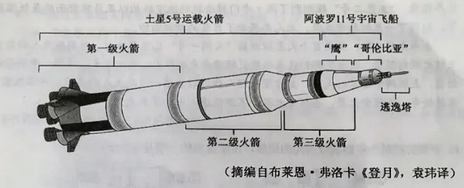
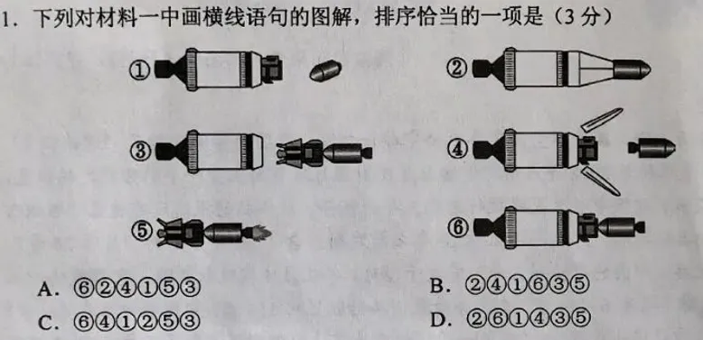

练习 · 非连续文本阅读
登月与月背探索
比较登月叙事、探测报道与推荐序中的科学信息。
导读
文体与题材：三则材料分别为登月科普叙事、月背任务报道和航天科普书推荐序。
作者与出处：材料一摘编自布莱恩·弗洛卡《登月》（袁玮译），材料二摘译自斯蒂芬·克拉克《中国计划在2020年前登上月球背面》，材料三摘编自吴伟仁《〈月背征途〉推荐序》。三则材料选入2024年高考语文新课标Ⅱ卷第1—5题。
内容脉络：材料一按发射、交会对接、着陆的时间顺序叙述阿波罗11号；材料二介绍嫦娥四号计划及此前探测；材料三回顾月背着陆的成就并寄语读者。
内容主旨：材料展示人类探索月球的阶段性进展，以及中国航天人在国际合作和自主探索中的贡献。
阅读重点：核查航天器部件的功能、任务发生时间与材料文体；区分科学事实和作者的评价、期望。
原文
原文按结构分节；随文内容可定位至对应段落。
材料一·登月过程·发射：土星5号升空，各级火箭依次工作。
①土星5号火箭升空了!它一点一点上升，庞大的身躯稳健有力。阿姆斯特朗、柯林斯和奥尔德林被巨大的推力紧紧摁在座位上。火箭在他们身下持续上升，各级火箭按照预定程序点火，第一级火箭、逃逸塔、第二级火箭一一分离。绕地球轨道飞行一周后，宇航员检查了火箭和飞船状况。第三级火箭再次点火，把飞船推向更远的高空。

材料一·登月过程·对接：哥伦比亚号与鹰号连接后继续飞行。
②当地球被甩到身后，就是船箭分离的时候：第三级火箭前端打开，哥伦比亚号从顶端弹出。鹰号(登月舱)在火箭顶端继续待命，这艘小飞船外形奇特，像一只缩着的蜘蛛。哥伦比亚号的驾驶员柯林斯，让飞船慢慢转身，“哥伦比亚”与“鹰”对接成功。宇航员告别土星5号的最后一级火箭，乘坐合成一体的两艘小飞船继续飞行。
材料一·登月过程·抵达：两名宇航员驾驶鹰号接近月面。
③终于抵达月球上空。阿姆斯特朗和奥尔德林驾驶鹰号离开，向着月球越飞越近。柯林斯驾驶着哥伦比亚号孤独地环绕月球飞行。此时此刻，那些远在地球上的人，不管是朋友还是陌生人，都时刻关注着、期待着……
材料一·登月过程·应变：着陆区错过，宇航员继续寻找安全地点。
④预定着陆区在哪儿？宇航员们全力搜寻。但是意外忽然发生：当他们发现着陆区，鹰号已经飞过了头！数英里一闪而过，舷窗外的月球变得崎岖不平。家园远在万里之外更无法奢望什么援手。此时此刻，他们能做的，只有保持镇定，平稳驾驶，继续飞行。
材料一·登月过程·着陆：鹰号平稳落地，地球上的人欢呼。
⑤看到了，就在不远处，那里平整而干净！鹰号慢慢减速、缓缓下降。登月舱越来越低、越来越低……直到平稳落地!此时此刻，在遥远的地球，人们鸦雀无声、屏息聆听。一个声音从遥远的太空传来，那是阿姆斯特朗从月球发出的声音:“这里是静海基地，‘鹰’着陆成功。”他异常平静，地球上的人们却爆发出欢呼的声音。随后，阿姆斯特朗和奥尔德林沿着舷梯爬下登月舱。陌生、寂静、壮丽的月球从此有了生命。
（摘编自布莱恩·弗洛卡《登月》，袁玮译）
材料二·嫦娥四号任务·计划：中继卫星、月背软着陆与国际合作。
⑥今年6月，联合国外层空间事务办公室举行会议，中国科学家介绍了“嫦娥四号”探月任务，表示将于2018年底前将中继卫星发射至月球背面上空一个引力稳定的位置，即地-月 L2点，这颗中继卫星将执行为期三年的任务。新华社的报道没有透露“嫦娥四号”发射的具体时间，只是说将在2020年之前发射。自1976年苏联的“月球24号”抵达月球之后，中国的“嫦娥三号”首次于2013年在月球实现软着陆。它搭载的“玉兔一号”月球车共有6个轮子，在任务结束前共行驶了约114米。中国科学家在《科学》杂志上发表的研究结果显示，“玉兔一号”的探地雷达探测到其着陆点下方有9个明显不同的地下层，表明该地区有着复杂的地质史，这与“阿波罗号”宇航员探索地区的情况有所不同。根据今年6月在联合国会议上发布的信息，“嫦娥四号”任务的主要工程目标包括进行月球背面着陆和深空数据中继。中国方面已邀请国际社会围绕“嫦娥四号”探月任务建立合作关系。
（摘译自斯蒂芬·克拉克《中国计划在2020年前登上月球背面》，2015年9月22日，英国“当今天文学”网）
材料三·月背征途·背景：月背难见与嫦娥四号历史性软着陆。
⑦从古至今，人类举头望月，传颂动人神话，谱写优美诗篇，却很少有人意识到，亿万年来，月亮的“图案”从未变化。地球引力使月球绕地球一圈的公转周期完全等于月球自转周期，所以人们只能看到它固定朝向地球的一面，我们把月球背向地球的一面称为“月背”。2019年1月11日，在北京航天飞行控制中心大厅里，科技人员见证了“嫦娥四号”和“玉兔二号”顺利完成“两器互拍”，这标志着“嫦娥四号”任务取得圆满成功，我国成为世界上首个成功实施在月球背面软着陆并巡视探测的国家。人类开启了探索月球背面的新纪元！
材料三·月背征途·成果：玉兔二号巡视及月背科学探测。
⑧这是一次前无古人的科学探险。月背探测是中国航天的首个世界第一，它具有巨大的科学和工程意义，是人类航天史上的重大突破。“玉兔二号”凝聚着中国航天人的勇气和智慧，像一位孤胆英雄，面对未知的风险与挑战，勇敢进发，努力探索。得益于驾驶员团队的悉心照料与陪伴,“玉兔二号”已经创造了人类月面巡视器生存时间最长的世界纪录。“玉兔二号”探测到了冯·卡门撞击坑的地下结构以及月球背面的最低温度等，取得了一系列科学成果，为人类揭开了月背的神秘面纱。
材料三·月背征途·寄语：推荐读者以好奇心继续探索深空。
⑨本书完稿之际，我国首个火星探测器“天问一号”已飞离地球，中国航天人的目光又随之投向深空。我由衷期盼这本书能引领读者走近探月、走近航天，滋润心中科学的幼苗，点燃胸中追梦的火焰，更希望年轻人能够沿着这一代航天人的足迹，不惧孤寂，保持好奇，去探索火星，去探索木星，不断追逐心中的星辰大海。
（摘编自吴伟仁《〈月背征途〉推荐序》）
第1题 · 图文排序
下列对材料一中画横线语句的图解，排序恰当的一项是（）

A．⑥②④①⑤③
B．②④①⑥③⑤
C．⑥④①②⑤③
D．②⑥①④③⑤
参考答案1展开 / 收起
参考作答
B
文本分析
A项查看证据 ↗
对接⑥须在哥伦比亚号弹出④并转身①之后，选项把对接置于开始，与材料过程不符。
B项查看证据 ↗
材料一先写各级分离，再写哥伦比亚号弹出、转身、对接，最后离开末级火箭继续飞行；次序为②④①⑥③⑤。
C项查看证据 ↗
对接和转身不可能先于初期火箭分离；选项与叙事顺序不符。
D项查看证据 ↗
哥伦比亚号尚未弹出时不能与鹰号对接，选项把⑥提前，故不合。
知识点
把材料中的具体表述转化为可检验的判断，保持概念、条件与结论之间的对应。相关研习：文本证据与阅读推论、信息转述与判断范围。
第2题 · 内容理解
下列对材料相关内容的理解和分析，不正确的一项是（）
A．土星5号“体型”庞大，因为它需要把逃逸塔和登月舱送入月球轨道，不过在飞行途中它会不断地分离，以减轻自重。
B．鹰号的着陆过程并不顺利，飞船飞过了预定着陆区，前方情况不明，但是两位宇航员镇定、冷静地解决了突发问题。
C．2013年，“嫦娥三号”搭载“玉兔一号”在月球安全着陆，这为我国探月工程后续任务的实施打下了良好的基础。
D．“玉兔二号”在月球的生存时间已经超过了“玉兔一号”，它探测到了全新的科学数据，为人类揭开了月背的神秘面纱。
参考答案2展开 / 收起
参考作答
A
文本分析
A项查看证据 ↗
材料一写逃逸塔在发射过程中已分离；它不是送入月球轨道的有效载荷。选项把早期分离的装置误列为送月轨的对象。
B项查看证据 ↗
材料一先写飞过预定着陆区，继而写保持镇定并找到新的平整区域，选项准确。
C项查看证据 ↗
材料二记载嫦娥三号与玉兔一号的探测成果，选项对后续任务基础的推论有依据。
D项查看证据 ↗
材料三写玉兔二号创造生存时间纪录、探得月背数据，选项符合材料所叙成果。
知识点
把材料中的具体表述转化为可检验的判断，保持概念、条件与结论之间的对应。相关研习：文本证据与阅读推论、信息转述与判断范围。
第3题 · 材料评价
下列对材料相关内容的分析和评价，正确的一项是（）
A．材料一中“此时此刻，那些远在地球上的人……期待着”“此时此刻……人们鸦雀无声”等语句，烘托了登月舱即将着陆时的紧张气氛。
B．材料二引用我国学者在《科学》杂志上的研究成果，将“玉兔一号”和“阿波罗号”的探测结果进行比对，然后对后者提出质疑。
C．材料三使用“世界上首个”“首个世界第一”等词语，表明“嫦娥四号”探测器取得不凡成就，也表现了驾驶员团队获得成功后激动的心情。
D．从材料一的成功登陆月面，到材料二“探测到……不同的地下层”，再到材料三的月背征途，可以看出人类在不断地对未知事物进行探索。
参考答案3展开 / 收起
参考作答
D
文本分析
A项查看证据 ↗
第一次“此时此刻”写登月舱刚抵达月球上空时地球上的关注与期待，尚未进入即将着陆的情境；第二次出现时登月舱已经平稳落地，人们正等待宇航员的消息。选项将两个时点都说成“即将着陆”，与叙述进程不合。
B项查看证据 ↗
材料二仅比较着陆点地下结构的不同，没有质疑“阿波罗号”探测结果，选项增添了作者态度。
C项查看证据 ↗
“世界上首个”“首个世界第一”强调任务的历史意义，不能据此推断驾驶员团队的即时激动心情。
D项查看证据 ↗
三则材料按时间展现首次登月、月面结构探测与首次月背软着陆，均体现对未知领域的持续探索。
知识点
把材料中的具体表述转化为可检验的判断，保持概念、条件与结论之间的对应。相关研习：文本证据与阅读推论、信息转述与判断范围。
第4题 · 文体功能
《〈月背征途〉推荐序》对读者了解这本书有哪些帮助？请根据材料三概括说明。
参考答案4展开 / 收起
参考作答
说明选题背景：解释月球总以同一面朝向地球、月背长期难以直接观察，并交代嫦娥四号月背着陆的历史成就。
概括内容及价值：介绍玉兔二号巡视、科学探测和中国航天人的勇气与智慧，使读者了解本书所写的主要对象及其科学意义。
提示阅读旨趣：表达期待本书激发科学兴趣与探索精神，引导读者认识阅读此书的收获。
文本分析
第1步查看证据 ↗
把推荐序中的“月背”概念、航天任务与书写对象分别找出。
第2步查看证据 ↗
再辨认末段对读者的期待，把背景介绍、内容概述和阅读引导分列为要点。
知识点
把材料中的具体表述转化为可检验的判断，保持概念、条件与结论之间的对应。相关研习：文本证据与阅读推论、信息转述与判断范围。
第5题 · 跨文整合
“科学无国界，科学家有祖国”，这在中国航天人身上是如何体现的？请根据材料简要分析。
参考答案5展开 / 收起
参考作答
科学无国界：材料二写中国科学家在联合国会议介绍嫦娥四号任务，并邀请国际社会围绕月背探测建立合作关系，体现共享探索成果的开放态度。
科学家有祖国：材料三写中国航天人完成首次月背软着陆和巡视探测，凝聚团队的勇气与智慧，为国家航天事业发展作出贡献。
两者相互联系：中国取得月背探测突破，同时以国际合作参与人类共同的科学探索。
文本分析
第1步查看证据 ↗
材料二提供国际合作事实，材料三提供中国航天成就与团队贡献。
第2步查看证据 ↗
依题干的两个分句分别取证，再用两者的关系组织结论。
知识点
把材料中的具体表述转化为可检验的判断，保持概念、条件与结论之间的对应。相关研习：文本证据与阅读推论、信息转述与判断范围。
参考文献
2024年高考语文新课标Ⅱ卷原题与参考答案，现代文阅读Ⅰ第1—5题；布莱恩·弗洛卡《登月》，袁玮译；斯蒂芬·克拉克《中国计划在2020年前登上月球背面》；吴伟仁《〈月背征途〉推荐序》。教育部教育考试院的2024年全国高考语文试题评析说明了该题组的选材。
本文关联
文本证据与阅读推论5 处
阅读条目 →知识点 ↗把材料中的具体表述转化为可检验的判断，保持概念、条件与结论之间的对应。相关研习：文本证据与阅读推论、信息转述与判断范围。
知识点 ↗把材料中的具体表述转化为可检验的判断，保持概念、条件与结论之间的对应。相关研习：文本证据与阅读推论、信息转述与判断范围。
知识点 ↗把材料中的具体表述转化为可检验的判断，保持概念、条件与结论之间的对应。相关研习：文本证据与阅读推论、信息转述与判断范围。
知识点 ↗把材料中的具体表述转化为可检验的判断，保持概念、条件与结论之间的对应。相关研习：文本证据与阅读推论、信息转述与判断范围。
知识点 ↗把材料中的具体表述转化为可检验的判断，保持概念、条件与结论之间的对应。相关研习：文本证据与阅读推论、信息转述与判断范围。
信息转述与判断范围5 处
阅读条目 →知识点 ↗把材料中的具体表述转化为可检验的判断，保持概念、条件与结论之间的对应。相关研习：文本证据与阅读推论、信息转述与判断范围。
知识点 ↗把材料中的具体表述转化为可检验的判断，保持概念、条件与结论之间的对应。相关研习：文本证据与阅读推论、信息转述与判断范围。
知识点 ↗把材料中的具体表述转化为可检验的判断，保持概念、条件与结论之间的对应。相关研习：文本证据与阅读推论、信息转述与判断范围。
知识点 ↗把材料中的具体表述转化为可检验的判断，保持概念、条件与结论之间的对应。相关研习：文本证据与阅读推论、信息转述与判断范围。
知识点 ↗把材料中的具体表述转化为可检验的判断，保持概念、条件与结论之间的对应。相关研习：文本证据与阅读推论、信息转述与判断范围。